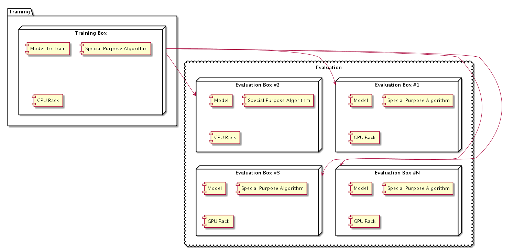
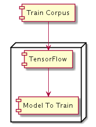
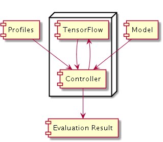

PeopleMatchAI designed for fast determination of purchase capabilities using person profile.
Persons profile looks like this:
{
"_id": {
"$oid": "58ea248524dce09f41209710"
},
"searchResult": [
{
"otherEmails": [],
"country": "United States",
"source": "PeopleData",
"lastUpdated": "2016-09-26T16:54:28Z",
"id": "AVdO_GcbPKMaPmPU7jEY",
"state": "arizona",
"probability": 1,
"query": "MANUAL_REQUEST",
"firstName": "John",
"phone": "1-520-247-9050",
"lastName": "Soukup",
"stateAbbr": "AZ",
"activity": null,
"gender": "M",
"city": "Tucson",
"result": {
"resultStatus": "OK",
},
"term": "[1]",
"mergedIdentities": [
{
"source": "EX",
"datetime": "2016-06-23T00:00:00Z",
"lname": "Soukup",
"class": "com.selerityfinancial.person.peopledata.dto.PeopleDataPerson",
"email": "c.l.soukup@comcast.net",
"fname": "John",
"address": {
"zip": "85749",
"city": "Tucson",
"streetAddress": "9352 E Vallarta Trl",
"state": "AZ",
"class": "com.selerityfinancial.person.peopledata.dto.PeopleDataAddress"
},
"ip": [
"71.226.126.234"
],
"phone": [
"1-520-247-9050"
],
},
]}
]}
System support over 240 million profiles of US citizens.
System Deployment UML Diagram  Basically system architecture will look like that:
Training Box performs following operations:
Training Box use Google Tensor Flow as AI
Old and new profiles form Train Corpus which is used by TensorFlow to create new Models
Training Box Deployment UML Diagram 
Operaional Sequence is shown here:
Crawling is performed over multiple resources. We need the way to properly match identities and merge their profiles. We might use email or phone as unique intentifier, since name won't always work. Since some resources might not return unique identifier we use AI comparing fiels.
Training box will be used most of the time to train all special purposes models using probably slightly modified Inception v3 alorigthm. Traning it from scratch is time consuming operation, however once all special purpose algos and models are trained it could be put down to save hosting cost and be running only once it's needed next time for next alorithm/model train. We will apparently have several purposes (so models and algos) depending on type of information consumers need to receive as the result of their searches.
Evaluation boxes will also be used all the time, they will serve large datasets searching for appropriate data according to consumer's search.
Evaluation Box Deployment UML Diagram 
Here are system software requirements
Here are system software requirements